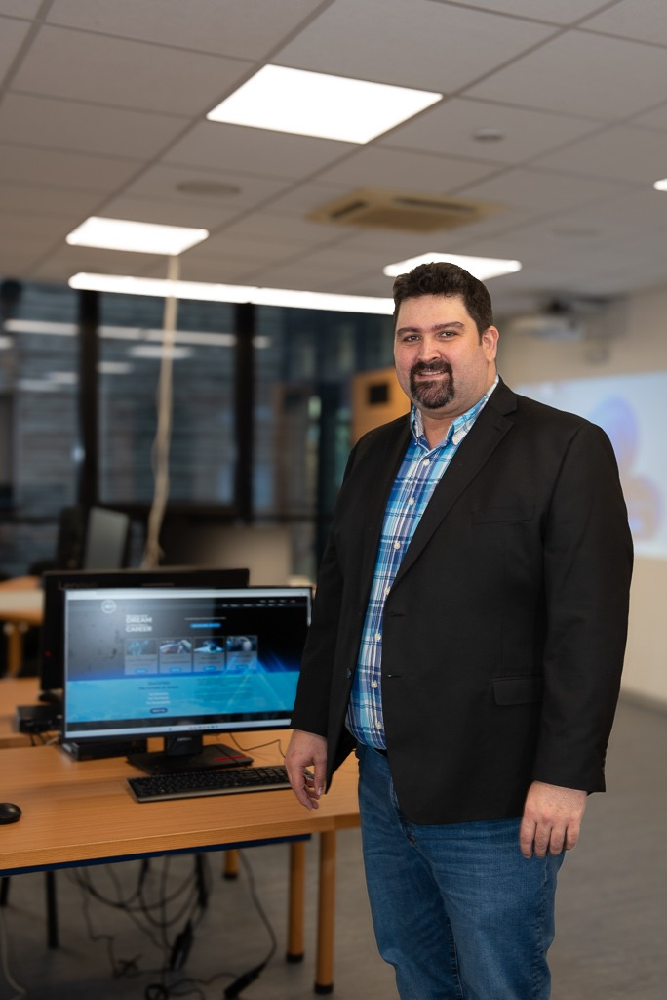

WIA-Europe Strasbourg Regional Network Presents
WIA-Europe AI-W Workshop
AI for Women: Empowering the next generation of aerospace leaders with autonomous AI workflows and technical agency.
Workshop Modules
Follow the workshop flow: prepare your environment, absorb the lecture, then build with your own AI agent.
Setup Guide
Install VS Code and Gemini CLI before the session so you are ready to go on May 6th.
Prepare Now →Presentation
The AI economy, the 2025 parity shift, and the paradigm shift from "prompter" to "orchestrator."
View Slides →Hands-on Lab
Run your first agentic workflow: query, multi-step task, and autonomous code generation.
Start Lab →Challenge
Design and execute your own agentic workflow to solve a real-world problem.
Take Challenge →Why This Matters
The AI landscape is shifting from passive chatbots to autonomous agents. Understanding this shift is not optional; it is the defining professional skill of the decade.
The Agentic Paradigm
AI is no longer a "smart search engine." Modern agents plan, reason, use tools, and execute multi-step tasks autonomously. This workshop teaches you to orchestrate them.
Closing the Gap
Recent data shows we've hit 52% parity in adoption. Our goal is to translate this adoption into leadership and strategic impact.
From Doer to Director
The most impactful skill is no longer executing tasks. It is directing AI agents to execute for you: research, coding, analysis, and reporting, all from your terminal.
Workshop Programme
Wednesday, May 6th, 2026 | 13:00 - 14:00 CET | Online (Zoom)
Welcome and Introduction
Opening remarks. Overview of the AI economy and the $2 trillion investment landscape shaping careers worldwide.
LectureThe Parity Pivot: July 2025
Analyzing the shift from gap to parity. Why representation in AI leadership is the next major frontier for aerospace professionals.
DiscussionThe Agentic Paradigm Shift
Understanding the transition from "AI as a chatbot" to "AI as an autonomous agent." The key concepts: planning, tool use, and multi-step execution.
Core ConceptHands-on Lab: Gemini CLI
Live coding session. Participants follow along in their terminals, running their first agentic queries, building multi-step workflows, and generating code autonomously.
Hands-onClosing and Q&A
Wrap-up, key takeaways, and open discussion. Resources for continuing your agentic AI journey.
Q&AMeet Your Instructors

Dr. Sounny
Geospatial Scientist, Educator, and AI Practitioner
Dr. Sounny is a leading expert in Geospatial Science and Technology with over 15 years of teaching experience at the University of Texas, University of Florida, and University of Wisconsin-Madison. Now at the International Space University (ISU) in Strasbourg, he bridges spatial reasoning, AI, and digital storytelling.
As committee coordinator of the WIA-Europe Strasbourg Regional Network, he is dedicated to empowering women in aerospace through technology and accessible education.

Sri Varshini Budi
Leader, WIA-Europe Strasbourg
Varshini is the Leader of the WIA-Europe Strasbourg Regional Network and a graduate of the International Space University. She is focused on bridging the gap between students and the aerospace industry while advocating for technical skill development in AI and sustainability.
Nina Velimirovic
Co-Leader, WIA-Europe Strasbourg
Nina serves as Co-Leader of the WIA-Europe Strasbourg Regional Network. With a background in international space studies and community coordination, she leads initiatives to empower female professionals through hands-on technical training and mentorship.
Vrushali Chittaranjan
Workshop Instructor, WIA-Europe Strasbourg
Vrushali is a member of the WIA-Europe Strasbourg Regional Network and a graduate of the International Space University. With a background in electronics and corporate experience in Data Analytics and AI, she is focused on leveraging AI to deliver efficient aerospace solutions and make complex subjects more accessible, particularly for women entrepreneurs in the industry.
 Continue Learning at ISU
Continue Learning at ISU
Take your AI skills further with intensive, hands-on curricula at the International Space University in Strasbourg.
The SSP26 and AS26 programs offer deep dives into AI-assisted development, geospatial dashboards, and sustainability-focused computing, all within ISU's uniquely interdisciplinary and international environment.
Explore ISU Programs →What You Will Achieve:
- AI-Assisted Development: Build complete applications using agentic AI workflows.
- Geospatial Dashboards: Create interactive monitoring apps with satellite data.
- Sustainability Analytics: Process Earth observation data for real-world impact.
- Portfolio Impact: Develop tangible projects demonstrating both technical skill and domain expertise.
Ready to join the Agentic Revolution?
Complete the setup guide before May 6th and arrive ready to build.
Start Setup Guide →